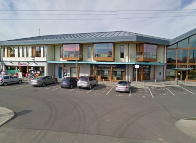

About Ratoath
Ratoath is currently the third largest village in County Meath. It is also a thriving village, which has seen a 683% growth between the census of 1996 and 2006 (recording a population of 3,064 and 7,249 respectively). This growth has continued and it is currently estimated that the population stands at 8,800 inhabitants living in 2,600 dwellings within a 3-mile radius of the centre and this makes Ratoath one of the largest growing villages in Ireland.
You may be astonished to hear that there are also approximately 250 businesses operating from or registered to addresses within Ratoath offering virtually every service any individual or business might require. However Ratoath's prominence is not new. It is actually a village steeped in history and according to various sources it was around 1196 that the first ever Barony in Ireland was created and so the Barony of Ratoath was formed. This was given to Hugh De Lacy and was essentially a division of County Meath incorporating Rathbeggan, Dunshaughlin, Kilbrew, Crickstown, Killegland, Cookstown, Donaghmore, Ratoath, and portions of Ballymaglasson and Trevit.
